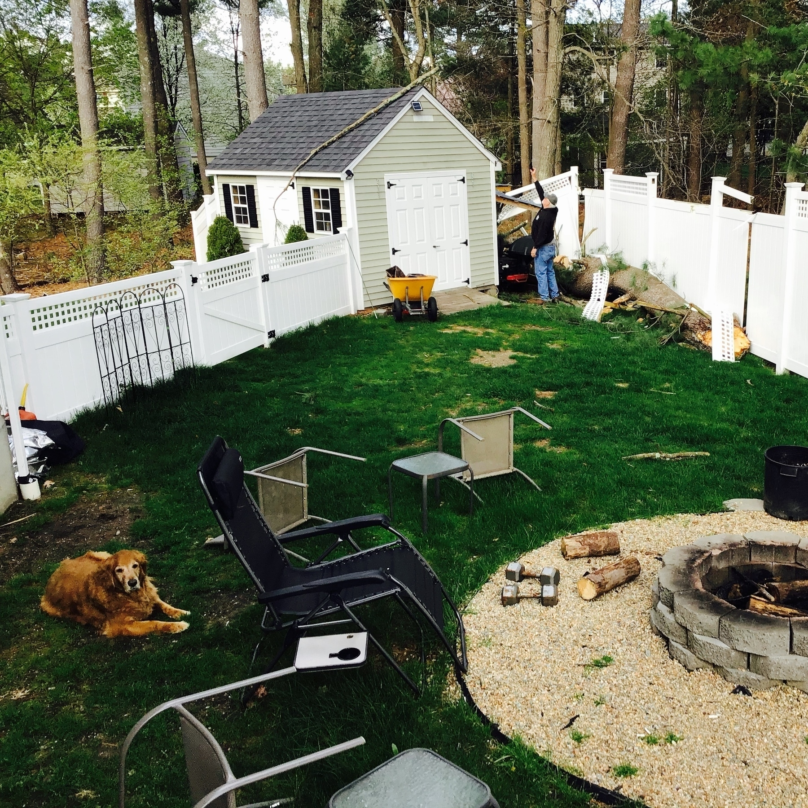

just sitting here stillworking on a cup of coffee while doing some C# programming at the same time. Fun thing to work on between calls.
I have lots of posts I want to make in the upcoming months… just trying to get my thoughts together in order to lay them out properly.
Trying to determine the best language to use to write schema extensions for Active Directory… seems doable via C#, but moreso via Powershell. it’s going to be a bitch… but a rewarding bitch nonetheless. If anyone has advice, is appreciated. Thanks!
When someone says they are bringing a surprise for Thanksgiving, and said individual is a proficient amateur bartender; Not to mention, one with a decent knowledge of flavor profiles. I learned to love the White Russian, espresso martini, and many others thanks to him.
When you realize that you like to play games on your phone at six in the morning… I’m definitely guilty of it… LOL
I discovered on a mailing list this morning… that Thor’s hammer was used by one of the folks inside of the Capital back on Jan. 6th… and said individual was not qualified to display it… not being Heathen. just… no. Wish these morons would quit using our symbols to promote BS.
Random person calling… she thought I was her friend evidently. Sounded sweet, though, so. Also had a 617 number, which I tend to pick up by default. T-Mobile identified her, so I picked up because I thought she was somebody from work trying to reach me. Either way… butt dials are better than spam calls.
Why I still love (and always probably will), Current Social Media
This will sound odd, coming from me, ever since I joined the IndieWeb officially in May 2019. But… it needs to be said, and I have learned this pretty quickly since I have been a citizen of the web.
The current social media landscape has it’s place… in fact, most of the fediverse instances that are currently standing are no better in terms of long-standing social issues; the ever-present “free speech” debate, on which I have since switched sides. I do not feel that strict governmental regulation is the answer to everything, though I don’t mind if they step in on particular things. The smaller organizations who can take care of themselves, though, should be able to. More on all of these points in a minute.
Why I Love Twitter
You’re probably thinking… that woman is insane? Yes, that I may be.. but proud of it. Either way… despite it’s shortcomings (all platforms have them, whether self-hosted or cloud-hosted) I still love the Twitter platform dearly. You can avoid the issues talked about in the news (hate speech, cancel culture, ads, algorithms), by following the right people; focus on the ones that you are actually interested in, and do not focus on the promotions. If you are interested in following a business, for example (I follow lots of them, and there’s nothing wrong with that), actually follow them from their social media links on their web site, not from a tweet that was promoted by Twitter. I’m no SEO expert, but from what I can gather via speaking with those who have tons more experience than I do, the more organic your followers are, the better. Keeps businesses honest. I don’t care who you are… buying followers does your organization no good, and it does nothing to enhance your stats that will actually help you grow.
On the more personal side of Twitter… I have made some fantastic contacts from all over the world, and said contacts, I would never have made without the organization known so affectionately as the Birdsite by some. Twitter is many things… but a few of them stand out; conversation, interaction, and network growth are some of its more redeeming qualities. While it sometimes feels like you’re posting in an echo chamber, and sometimes the platform is just that depending on your followers, you also might get lucky; last week, for instance, I posted a comment on a check in from Swarm, and the corresponding tweet was seem by one of my former support reps from a few years ago. I never thought I would hear from him again in any capacity, and I begin to wonder, had I not posted that tweet, would I have found him? Probably not, but it was nice to catch up, nonetheless. My point? Had I posted that anywhere else, I probably never would have had the pleasant interaction that I did… because he never would have seen it.
Facebook: My Thoughts
The elephant in the room… let’s talk about him. (political correctness nazis, forgive me for “assuming gender”.) Either way… Facebook is just one of those things, it’s an absolute no-no for some, while for the majority of us, myself included, it’s a necessary evil. I started my Facebook Journey while I was at college; a friend of mine introduced me to the site called “Facebook”; she had been talking about it previously for weeks, singing the praises of the “new social network”. “What is this”, I had asked. “I’ll show you”, she had replied… and then the rest was history.
I posted my entire life on Facebook; from the random drives up to New Hampshire, to the times at the office when I managed to spill coffee on my desk in the middle of the afternoon (when I got coffee in the afternoon hours, that is), and while some posts got comments, likes, and all of the other little interactions that all of us are hoping that each and every one of our posts will get, I just didn’t worry about how many I received; being more concerned instead with the lives of all of the other people around me… not to mention, the re-acquaintances I made, most of the folks had been outside of my life for at least a few years prior. If not for Facebook, I never would have found them.
Little did I know, later, that Facebook is the worst for privacy, particularly what they did in 2016, but even after that. I am a very open person, in general, and a lot of my posts are tagged with geolocation, for instance. But, if I choose to display that information, I should be able to do so with out then getting a pile of random ads thrown in my face. I would rather see ads based on keywords, not based on location or other personal data. So, from that prospective, Facebook needs to have their ways reined in. I can’t speak much more on that, considering I’m as far from a legal expert as you can get.
Something else… most of the stuff you read regarding Facebook is referring to attention, screen time (what is that, anyway?), and how Facebook is an addiction for some people. I am still on the fence, but I do not at the moment believe so-called “internet addiction” is a real thing. I don’t however, have anything to back that one up, considering you get different things seemingly depending on whom you’re talking to, or which site you decide to pull your news from. Either way, there are simple solutions for social media grabbing our attention. (for you could say the same thing about a personal web site; attention, is, after all, defined as the amount of time spent on something; when we give our time to a subject or person, we give that entity our attention, so the reference is too vague to even be useful.) I’ll start with the simplest and then I will go for the more complex:
Time yourself. This can be done simply by keeping an eye on the time; carve out a particular slot of time that will be spent on social media, and when that runs out, log off of Facebook
focus on the things that interest you. Just like Twitter, as long as you focus on only the things that interest you, and not on the trending topic of the day/week/month/whenever, you will find yourself less prone to begin following the propaganda provided by our current news sources most of the time, or wasting precious time looking at the latest celeberty gossip… I care for neither of those on the average given day, in fact. Give me cat/dog/squirrel/racoon pictures, please. Along with cute descriptions so that I can picture the furry creature in question and have my heart melted.
Interact with the posts you like rather than simply liking them. this one doesn’t necessarily go without saying… because platforms like Facebook make it way too easy to just click like and move on; Insta is the same way, but both leave room for nice conversations. Posting a comment on a post you like in addition to giving it a like is a better candidate for interactions, because most likely, commenting will yield a decent conversation. after all, why else are we here? Human interaction, guys.
be Sparing With Shared Content From Pages. Since the point of Facebook is interactions, and since their algorithm tends to favor pages over posts from friends and acquaintances, be mindful of the page content you share; only share content from pages where you actually have a vested interest in the product being promoted; otherwise, you will mor than likely simply annoy those around you by pushing what could easily be viewed as unsolicited content.
All of these put together will go a long way towards making your Facebook experience more productive. that, and interacting with people will help immensely.
Conclusion
I wanted to bring this issue to light for a couple of reasons. partially, it’s because of all the hype surrounding social media and now it needs to go away. My opinion? It doesn’t need to go away, and I will admit, as stated above, it does indeed have it’s flaws, but no software has fflaws without human intervention to bring them out. Now, am I saying that some of the things that have happened with Facebook are it’s user’s fault? No. can they be? yes, depending on configuration. I hope this gives you a glimpse into two of the most prominent social media platforms and how they can be made to be beneficial, and not harmful, in your life.
Randomness On A Saturday
Another boring Saturday morning full of coverage… let’s see how productive I manage to be today, shall we?
Get an email in my inbox saying I got charged twice for something for which I was clearly not charged twice (thanks Eno), so that’s quite fun… I’m not even going to worry about it… it’s sort of like the fake overdraft fee notice I got from a bank with which I’m no longer a customer last month. Both have been interesting… at least the double charge notice was just an email, not something in the mail…
I wonder what is going on with application virtualization today at the office… Citrix, while finicky on a good day, is extra finicky today. Happy Frig’s Day to you, too.
Mochas are good… but Gods they are sometimes too sweet for even me. I just had one at Duncan Donuts… don’t think I’m doing that again for a while unless it has peppermint in it. (Will try that on Wednesday.)
Happy Monday… typical… new users not being provided with first steps for getting into the system… half of them don’t even get a link to their new profile. C’mon, guys. Yeup, that’s my normal work day.
Monday's C# Fails
the joys of forgetting to capitalize all your variables… I will be doing a better job at remembering it in the future… because I sort of got screwed over on that last exercise. I did the string interpolation perfectly, though… well, at first forgetting the $ at the beginning of the string… so I was wondering why the variable names were being printed instead of the values? That’s why. Because I forgot to tell the compiler to interpolate the string.
Decided to get fully into the Halloween spirit. I wore a comfortable sweatsuit today, but decided to throw my red cloak over it.
And now my mouth is watering… thanks to my friend asking me about sandwiches… I’m losing my ever loving mind… if I’ve ever had one to begin with.
The question when coding… how to keep one’s concentration up while trying to perform a harder exercise… I just completely lost my motivation for some reason. I’m still full of energy, but not for converting datatypes, I guess. LOL #dotnet #C# #learning #opensource
It also helps though in C# to capatalize your methods. Otherwise, you get errors regarding definitions. I was confused… for a split second, until I saw the lower case letter.
Doing some coding while on a very boring coverage day at work. We’ll see how this goes. Though I have been making some nice progress, which is a good thing. I also downloaded a course from Utemy on the C# language, too. I think that seeing about different learning styles might be beneficial. I have always been a reader, though hearing another prospective on a subject via videos and what not can sometimes throw light in places where plain text can’t reach.
One of the main reasons why I prefer stuff like Epub, to be honest. Because that doesn’t rely on a cloud service for updates and what not. I like both, though… because having the functionality of progress, insights, and what not keeps me motivated. (unless an Epub reader could get those, then that would be cool.)
noticed a peculiar thing… books on Kindle that don’t have any screen reader support on Windows do to have it with mobile screen readers like VoiceOver. that’s new… only discovered that by accident when I was flipping through my library… it also seems that Amazon’s attempt at a desktop application on Kindle is an afterthought, to be honest; progress does not show up when reading a book from the desktop; when a book is finished from there, for instance, you end up having to properly mark it as such in the mobile application. Just, why?
I have decided that my next decor project is going to be Viking themed. ever since I became interested in Asatru, a secondary interest for art and culture came along with that. It’s not just about the religion for me, but about everything else; the language, culture, and values.
Random mobile spam messaging morons, If you’re gonna send spam messages, at least make them believeable and make sense…
No love, Kat
Strange… wondering why my coffee tastes off this morning… I was late coming into the office, so got it later on in the day, though normally coffee is coffee, so I know not what’s going on. Could be the hazelnut syrup, perhaps? It tastes all right, but ugh.
I still find it difficult to believe that so many in our world still have no clue what the address bar is in web browsers, and then when they do, they haven’t the damndest how to use it… Love teachable moments, but sometimes people just want all the answers given to them. That’s a very tough stance for me to take as a technologist, because I was raised a teacher by teachers…
Thanks @Manton for fixing the editor on the web version of Micro.blog. I can now navigate through it by either word, letter, or line. Never have I been able to before. Which editor is this, by the way? Because it’s now accessible for those using screen readers!
thanks to particular authors for offering actually accessible PDF documents of your books when Amazon screws the blind over. Just downloaded the PDF from Keith Michael’s web site. Worth a read if you want to learn some hard truths about Christianity (one of the reasons why I went back to my polytheistic ancestral roots.) But authors who do this… I could hug you, and the blind community thanks you with all our heart!
Gods above… out of all the pieces I could have chosen for my musical objectives this week… getting back into the art of piano playing and actually taking said hobby seriously once more… why did I have to pick Chopin’s Revolutionary Etude to start? Though it does provide an intense high when played.
A great example of this… are older, primary source texts.. while translation makes is so much easier for Americans and other English speakers to read, they sound a meriad of shades more beautiful and meaningful when you hear them spoken or chanted in their original languages.
I could be a bit too enthusiastic here… but am I the only one who’s noticed that sometimes English is not adequate enough to get a special point across? I find myself thinking sometimes, and normally the language used is not English. There must be a reason why other languages hang out in my subconscious sometimes…
Finished reading: The Heathen Handbook by Woden’s Kindred 📚
evidently my case of Friday fingers is persisting into the working weekend. Just typed “go” as “goo” when replying to somebody.
but don’t worry… I intend to write more dotnet posts to monitor and public track my own progress. So keep a hazel eye out if interested.
Interesting… looks as though my category page is the only one that shows up for dotnet when searching under IndieWeb Search. Not entirely sure how I feel about that, though it does show how little on the IndieWeb Microsoft’s now cross-platform tech is ill-represented.
I know why I’m tired… and it’s no one’s fault but mine… I keep spending my nights chatting instead of sleeping.
I’m normal today.. except for the dizziness. Never quite figured out what that was, but I also never mentioned it directly to my doctor… which I think I will do this time around, particularily because it occurs even on days when I do remember my meds.
No diagnosed heart condition… but having an abnormally high heart rate isn’t fun sometimes. It’s kinda freaky whe it shows up randomly.
I can always tell when I forgot my meds… I’m dizzy, tired, and I feel like shit in general… Great. Now that I think about it… need to request a refill of that, I think. Lovely.
One of my biggest pet peeves? Requests that have two parts of them… and then only part of the request is fulfilled because somebody didn’t read… Ugh.
Another weird one… contemplating bringing rammel up to Windows 11… possibly Liliana, as well. Liliana actually needs a reset… for now all I can do is join her to AAD, but ideally local domain join will be returned in the future.
And why do I have Ty Dolla’s “Coup” on repeat? LOL… love the beat… just wish the lyrics were as awesome.
The only thing that Micro.blog is so far missing? The ability to add alt-text onto an image when posting it… unless it’s on Sunlit and I missed it?
This probably only matters to those who study languages or who have a reason to write different markings either for names, and so on, but has anyone figured out either þ or .ð on iOS? Sort of obscure, and normally only used with either Icelandic or Old English these days… but still interesting, particularly when writing names from Norse mythology properly.
Faeborn Networks. Thanks Pj for the good time.
changed my email for [dev]9dev.to) so that it uses the right one… also information has been updated; same user name there as here…
Halloween falls on a Sunday this year… will have to be careful around the family and not mention Helja’s name by accident… Considering I will see if my white robe still fits. I know my cloak does. No hair dew this time, though
I have no idea why in the nine worlds this is happening… but Sunlit is crashing a ton this morning on iOS 14. Never did this until now… so not entirely sure what the issue is. When I find somethingthat could potentially help out the community at large, I will let you guys know. Anyone else having this issue?
I’m learning Italian via Duolingo right now… will get back to Gaelic when I get the chance, though Italian’s easier, for one, and I actually know someone with whom I could theoretically practice. Irish I could… but all I have ther would be via Discord.
I just added the Italian keyboard on my phone… didn’t know that doing that is so easy… there’s honestly one place where Mac has the leg up above Windows. It isnsn’t difficult at all to type in other languages, even if you only type in a secondary or turshiary language very infrequently. You can set them up as nice to haves without a crap ton of work.
I find that whenever I read a book review that criticizes the amount of detail the book goes into, I discover that I love that amount of detail and always disagree with the reviewer. Am I just a sucker for academic writing, or something? LOL
Currently reading: Our Troth: History and Lore by Ben Waggoner 📚
As I go deeper into my study of Heathenry and druidism… I am loving the freedom that such an eclectic and diverse spiritual practice offers. No rules, just closeness with the beings who have been all around us for eons.
Not that no longer subscribvbing to Christianity justifies “bad” actions… but it does make them easier to bare, for if I do make a mistake, it’s up to only me and the persons involved; I don’t have a big bossy sky god threatening Hell upon me. So, being a Heathen also takes away some of the fear that I previously associated with the afterlife; questions like, what if there’s nothing there? and, what if I don’t end up where I thought I was going to? Now, there are a few places I could go, none of them awful; Hell’s realm (Hell as in the goddess, not the fake place), Valhalla, the Onix Palace (Unseelie Court), or the Silver Palace (the Seelie Court).
All of these sound good in comparison to what I was previously taught. Issue will eventually telling the parents… but I’ll keep that for another day. Right now, I want to find like-minds in the Druid/Heathen community.
I’ve just started playing Lords and Knights again… I forgot how fun that sort of slow gameplay can be.
So now I’ve got a total of three games I play; Trivia Crack, Swordy Quest, and lords and Knights. I also downloaded and got Adventure to Fate up to level seven, though haven’t played in at least a couple weeks. That’s getting fixed soon, though.
The more stuff I read and the more patterns I find… the more suspicious I get that Christianity is truly just a copycat of other eligions which came first… just another political play to control people.
Just realized something… Wondering which came first, and why the number is so prominent… twelve handmaidens of Friga, twelve disciples of Jesus, twelve tribes of Judah? Has anybody noticed a pattern here? Could the latter just have been copies of the first set of twelve?
I forget which thing this was when it occurred the first time… but I remember having to log out of my phone complete and log back in in order to get the vault contents to sync.
Not sure where the disconnect is… but it’s the second time this has happened; added an entry for PagerDuty in Bitwarden, and it doesn’t show up on my phone’s version of the vault. Password was randomly generated, too.
Then again… Odin and friga are the keepers of wisdom… so… if I’m called to read, it’s a good possibility one or both had a large hand in it.
Lunch time… finally. though stuff doesn’t seem as crazy today as it’s been the past few. Not to mention, working on Sunday… so hopefully it will be dead around here then, too.
Happy Thursday everyone… I get the feeling that today will be either very borning or very interesting… and i can’t decide which… yet. We’ll know soon enough. (Have just started getting back into keepign a proper to do list… so, should start getting shit done.)
Just another Wednesday; second shot later on… and I seriously hope that doesn’t impeed me too much, for I have heard that the second shot is worse than the first. friends of mine had symptoms, but no one in my family did.
I seriously wish my family had a cat… I could cradle one in my arms right now… I seem to have equal affinity to both canines and felines, yet I seem to have a strong spiritual link to the feline soul.
federal legalization is about the only thing our current government has going right for them. Otherwise, buzz off, Joe Blow.
Morning all… Monday again; raining like cats and dogs here in Somerville, Massachusetts. How are you? Hopefully raindrops aren’t falling on anyone’s head…
That… and finish up that and C# so that i can continue with some interesting goals. (I finally found something against which it might be a unique experience to develop.)
I definitely need to streamline part of my workflow a bit better, and part of that will be setting up a GitHub notification clinet. (and just wondering… does GitHub support Pushover?)
9/11... Twenty Years Later
The ever-standing question that oftentimes comes up… “Where were you when the world stopped turning?” To quote the famous Allen Jackson. Either way… Today marks the 20th anniversary of the 9/11 terrorist attacks. Let me tell you where I was.
It was a Tuesday, and the family and myself were preparing for a wonderful Allen Jackson concert (remember the quote from above? Yes, that most amazing country singer who’s music I still adore to this day) and never in a million years were we at all prepared for the events of that most fateful day. The sun was shining, even the birds were singing. I got on the van that came to drive me to school (I had been going to school per the vans from the Transportation Colaborative organization that drives special needs students rather than the normal school bus.) Classes proceeded as normal, but I do remember having just returned from a mobility session with… somebody, can’t remember who it was at the moment, when my teacher, Maryjane Clark, arrived next to me on the sidewalk, seemingly from out of nowhere. “Get back to class. I need to talk to you”, she had said. “What’s going on? are we in trouble?” I had asked. Ms. Clark said nothing.
the classroom was silent; no one was talking, and something about the day bothered me… I didn’t know then, however I know now, that the energy in the room was off; none of the normal vibrancy was present at all. it was then that mS. Clark started to speak… she explained what was happening, and she did a fantastic job helping to convey to children the magnitude of the day’s events. (I might have been a smart twelve-year-old, but I was only twelve; a child.) Either way… the show did eventually go on, and I can’t remember now, but I think the Perkins School for the Blind might have had an early release that day, but don’t quote me.
On the way home, the quietude continued with my favorite rap station, JAMN 94.5, not even playing music, and instead, the DJs (Ramiro and Pebbles at the time), simply stated facts about the days events, mourning the three thousand who had died, though at that point, no one new the death toll. I will never forget that experience for the rest of my life… instead of it being normal, we remember who tried to bring this country down; all they have failed to do though, in the next twenty years, though, is bring us to our knees. U.S. Strong, Boston Strong; the two phrases that I will keep in the back of my mind, always. The fictional President Whitmore from Independence Day sums up today well during the scene when he said: “A lot of people died today… so many didn’t have to.” If only our current president were that sensative… (whoops, I didn’t say that out loud, did I??) The US still stands… twenty years later, and no one will mess with us. Despite our difficulties in politics, the pandemic, and everything else, we are still here… take that, Al-Qaeda!
I might be missing something… @manton, please update me if I’m wrong, but I have this site backed up to GitHub; repository is called CP90Archive… what am I missing? Do I also have to have my user name in the repsitory name field, as well? it’s been up for a few weeks now, and so far, nothing has been updated.
I need to take my colleague up on his offer to toss his old Mac on my desk. I want to experience the glory that is Apple (while not trying to switch from my Windows roots, though), and see how much of a difference having that existence on the desktop can make.
Cleaning up...
If anybody has noticed over the past few days that I have vacated their discord server… it’s not you. It’s me, surely… if I’m not on Discord with you, then it probably means that we haven’t talked enough outside of the environment as it is. Plus, my interests have been changing up a lot lately.
Reading programming historical references from the year ‘14. It’s quite remarkable how far .NET has come… Jesus. In a good way, mind you. Anyone remember when Aphid was justa tiny scripting language better for DSLs than anything else? I issed it back then, in fact, but I caugt up to it when it developed further… Not as old as PowerShell, but… still.
On a different note... have decided that when looking for reference books on a particular topic, I need to do a better job of vetting the authors I choose to read from. Was informed by the Heathen community last night that an author who's information I was finding quite valuable, is actually nothing but a racist. No thank you.
Suggestion for @manton. when doing a reply in a conversation, provided a check box for the reply to be sent to multiple parties if there are multiples. Otherwise, just have it go to one individual.
Inoticed something… when updating a book on micro.blog via something like IndieBookClub, the corresponding shelf up here is not also updated. I wonder what it would take to fix? Unless that’s be design?
Finished reading: Viral by Robin Cook 📚
Currently reading: Viral by Robin Cook 📚
It appears the Gods were with me this morning… I wasn’t too late for work… and I managed to procure some of that elixir called coffee.
Was a typo, though… I don’t think the group to which that was assigned realy would have found much hilarity in it, to be honest.
when you very nearly accidentally write “fart” instead of “far” in a ticket internal work notes… Hi, Friday.
Weird Thursday morning… business still hasn’t let up at all. Now I know why, considering we are down by about fifteen people
When September Begins
This is just me doing some rambling from the end of August to the beginning of September.
Damn you, Amazon. Why, oh, why do you keep sending me fantastic reads? Authors I have never even heard of… and now I want to buy every friggin’ book off of your virtual kindle shelves…
gettings headings right in markdown… helps when the file you’re working with is a valid one… somehow I created a document earlier which had a dual extension, and that screwed everything over.
Busy Days Ahead
It’s only Tuesday… and already it’s been a crazy as all hell week. Not entirely sure why… but I suppose having upgrades of Epic over the weekend at the office didn’t help things. Working in healthcare in the IS department certainly does have its share of interesting and random encounters. Also… so does being the only one seemingly present on site on a Sunday when it seems that you were the only one who responded to a call for coverage. I could be incorrect about that, though, but it does feel like I was alone.
Let’s start With The Basics
Today, as Tuesdays go, was fairly normal. Got in on time… after accidentally waking up at 06:10, but that’s beside the point. Driver came to pick me up in a reasonable time, which is nice, because traffic sucked on the way in, and I still managed to pick up my coffee and a pastry with time to spare. I can’t say that’ s the way of it every day, though. And… it’s only a little afternoon. We’ll have to see how the rest of the day goes.
Changing Feelings Surrounding the COVID-19 Vaccine
I will admit... when any of the vaccines first came out, I had a seriously different outlook on them than I do now after getting my first Pfizer shot back on August 25th. While I don't agree with the way the media is portraying the vaccine, and I seriously sometimes wonder about the truth of a lot of the information we've been provided, I have to say... I agree with the incentive to be vaccinated. (in fact, I should have gone with rather than against my gut when it told me to vaccinate immediately. Instead, I waited for my family to make the move first.)
## Pfizer Adventures
On August 25th, as stated above, I ended up getting my first shot. While others have had negative reactions towards it... mine went pretty smoothly. Nothing but a bit of a muscle ache afterwards... will be fun ggetting the second one, for that seems to be the one that's not as smooth. (I hope that my body doesn't play tricks on me during that time.) I will be keeping you updated; next entry on this will be the 15th of September, when my appointment is scheduled.
The biggest pile of advice I can give you? Keep the noise and Bullshit about this stuff out of your life; whether that's via social media, television, and so on. Focus on the facts, not the potential fictions surrounding them; I think that if I had taken my own advice and done this, then I wouldn't have waited as long, I would not have believed falsely the way that I did at first. Either way, good luck, and keep an eye on your health.
Dead… as usual for coverage days; system’s being stupid and not showing me any of the tickets that are in the queue… what else is new?
Sunday will be interesting with the extra coverage shift I took… no more getting up at quarter of five, though, so I won’t be in a rush. That’s for sure.
When you discover that someone whom you’ve known for three years isn’t who they say they are… and then they won’t even consider facing you.
## Updates
It’s been a bit since I have done a longer post… so, it’s about time that gets fixed. Here we go… Firstly, happy friday, everyone. At this point, I am going to give a quick overview of what I’ve been working on. That’s not too much at the moment, though, I’m sorry to say, but at least I do have some milestones to report… at least that’s something.
First… Programming
I aim for the following goals for the rest of the year… that is, provided I can remain undistracted enough to finish in a timely manner.
- Obtain a working knowledge of the C# language
- Be able to use APIs to create things lacking in the windows world
- Proceed with my existing PowerShell studies
- Be able to make decisions regarding the correct tool for the application
I could go further with these goals in mind… though in light of it being only about five months away give or take, my next set of ideas will probably take me into 2022, and it’s about time we finish up 2021 first. I definitely have some challenges ahead of me… that’s for dang sure.
Music
One thing is true… and that’s the fact I have let my music skills languish in disuse for far too long. (I am hoping that when I move… I will be recording a heck of a lot more audio tracks thanks to my friend’s digital piano; as gorgeous as acoustic instruments are; have one, and I love her, they are very difficult to work with on the side of the amateur audio engineer) which will be nice for those interested, and more people are than I would have thought possible. I have some goals to fulfill by the end of the year… hopefully.
- restore my past numbers.
- Learn something new
- complete some of my previously unfinished complsitions
Either way… until next time, have a great time, everyone.
Nearly forgot that I can use Https://twitter.com/vscode as a full-fledged markdown editor. Not sure why I thought of purchasing licenses for additional software; the former has everything I need at the moment.
gotta love Fridays… this is a test, considering I think i fixed my feeds again? Not sure, though. Let’s see.
Randomness In The Middle Of The Week
This was meant to be much longer, but it’s more like just a random audio segment that I did.
I think I’m going to actually make a better use of the subscription, and start actually using the podcasting features. Either way, new random episode today. I’m going to try to post a bit more audio type content as much as I can every day. We’ll see how that goes.
Hopefully Plesk decides to behave itself and I can be back on my Wordpress home here shortly; Jetpack has been bombarding me with messages saying my site’s down. Yeah, I know that, computer. LOL
It’s been relatively relaxing today… just got back from the hair salon… and now doing a whole buttload of nothing.
Another very early morning this morning. Will definitely have to see how this goes. Looks pretty good so far, after all, I did manage to get an actual seven hours of sleep last night, something that never happens.
I just recently added my new custom domain, but it obviously doesn’t show up properly. There is currently some sort of a demo-y looking page, but it will work if I use mmy older subdomain on here. What did I do? I disabled my older domain in my former hosting panel.
Another drizzly morning. Looks like the rains going to get worse later this afternoon. We’ll have to see what happens.
The awkward moment when you realize that you shelved a book in the wrong place… several years ago. I noticed it when doing a GoodReads import.
Crap is driving me insane today… just found out that I managed to miss a ton of stuff last night, though not sure how much.
I’m literally afraid to ask people what’s going on, but I know that some day either I’ll ask, or somebody’s gonna tell me.
Job performance review today, and though I probably should be, I’m not nervous at all. I am sort of excited because I have been doingg fine, beter, by my own estiminations.
Things I’m gratful for this day:
Nicer Weather
Datacenter staff who cut me more slack than necessary
good people at work


Finally upped my trakt.tv to a VIP subscription… which I meant to do but just forgot. I need to get my RSS feed and then somehow set to automatically show up as a watch post on Known. For now, until I can do something with the API, I’ll stick to RSS being fed into my stream. I can do that,right?
Looks like I’ve got my work cut out for me here in a bit. Will be much easier when I’m actually a little more proficient in PHP; getting there, but not quite.
Is it just me, or does MB not support .heic formatted images? I'm trying to update the photo on my profile to an actual good on, and I can't seem to. Just says that there was an error processing the request.
Currently reading: Italian Witchcraft: the old religion of southern Europe by Reven Grimassi 📚
there goes the fence.
This is what happened to our fence on Friday during a rather heavy wind storm. It was just wind, but it was enough to drop one of the branches of our neighbors huge tree, and it landed right in the yard. I’ll never forget what that sounded like as we were sitting down together at the dinner table.

Just sitting here… work has been all right today. Was a bit on the anxious side when mydriver didn’t feel like helping me with y seatbelt (coouldn’t find it.)
Having a heck of a lot of fun this morning. No traffic, which was good. So the only problem, my breakfast sandwich was so hot that I almost ate the paper when I came in. I had to keep removing little pieces of it they got stuck to it. Either way, sandwich was delicious. With coffee to top it off.
Not sure how this happened,but I have hopefully fixed the header on my main site, cambridgeport90.org. Still says unverified no matter what I do. Maybe @help might have some light to shed on this. I think it’s probably me, but where?
The End Of January.
This is just a random episode mostly talking about nothing marking the end of the month. Will try to keep these up more consistently.
Another thing at least that I have noticed … failed webmentions on a couple of my posts. Not sure why.
Need to set up the app to point to my site so that posting up here will bring stuff there,too, though with my foggy mind right now, trying to configure something is probably not the best idea at this moment in time. I’m already stretching myself thin by having to think about deploymments of SCCM/SCOM today, considering I told my friend I would start yesterday, and of course, I didn’t.
Trying to use micro.blog site verification, and though I added the
tag, somehow my site isn’t marked as verified. I don’t remember this taking too long the last time, either. Might it be beecause my domain name changed? @manton, and anyone else on the team could shed light on this … would be great. Thanks!Can finally verify my site on Micro.blog once again … this should be very interesting. actually has a refreshing feeling to it, to be honest.
Just read an article where an author admits to not using the Evolution email client on Linux because it looks like Outlook. That’s the very reason why I want to use it .. I want to eventually switch full time.
I need to ask some advice of the technologists who still value both Windows and Linux. When server software can run on both, barring personal preference, for in the business world they don’t matter, how does one decide which one to use? Windows, or Linux? And if Linux, which distribution?
Currently reading: Windows server 2019 Inside Out by Thomas Orin 📚
Forgot how much of a pain in the ass holding a template’s formatting is when you replace the template text with your own. But after all,isn’t that the entire point of using a template? LOL
Not sure what the rest of my plan for the day is after getting back from a bit of an outing in the city, but ideally I’ll be doing another programming chapter, even finishing up chapter 3 of my C# programing book? Possibly? We’ll see, though not promising anything, for distraction is my middle name, after all.
Only thing that needs changing is an actually accessible editor when you’r editing text as a blind person.
If you could pay for a more well-known social media presence that got rid of all ads, all recommendations based on algorithms, and everything else associated, would you? Micro.blog is a favourite social network of mine, now that I’m actually getting used to it. Seriously.
On another note … I think I left the draft of the workstation PowerShell Chocolatey/Boxstarter script at work … again. I wasn’t too worried about it yesterday considering I got into the office two hours late.
Currently reading: Seeing the supermatural: how to sense, discern, and battle in the spiritual realm by Jennifer Eivaz 📚
favourite authors: Merlin Starlight, Claire Ahmed, Ethan Lazarini, Dianna Cooper, and truthtellers like them. Not to mention my love for nonfiction, biography, and fantasy.
You can only free the ones who want to be free, and that’s not my family … not yet, at least, though I have strong intentions to fix that.
I’m in the midst of so many books right now … ujust picked up a book by Dianna Cooper and one by Jennifer Ibas. Since my argument with my mother, I’ve been reading more about the angelic realm while pretending in her presence that the Fae don’t exist.
I can’t wait until I can start working using Indigenous once again … will be a refreshing experience compared to this interface. Love this minimalist look, but not being able to see what I’m typing is somewhat of a pain inn the ass. Think it was @arush who first pointed it out … though I could be wrong.
Unfortunately for now, I have to keep my soundcloud presence up, since I have no better places for it right now.
Modern IS practices … People never know when they, as the user, need to follow up, ticket gets left out in the open for months. You wonder why people get so frustrated.
Wonder how difficult it would be to implement webmentions via @-domain, @-WP user name if known, or @-activityPub user would be for Wordpress … only MB and Drupal seem to implement any method of doing that, and there needs to be more.
I could go into the details, though, I think I will avoid humiliating both myself and those involved.
#indieweb presence right now is a one hundred percent loss. Sorry @boffosocko.com, will probably never find the stuff you were looking for, now.
Created a brand account for my YouTube channel. When I sign into my old Google account, somehow it tells me that I have no accounts to watch to move my existing channel. Therefore, now they’re completely separate. Should I start over, or should I just not have my name display on Google? What are your thoughts?
All I will say … whoever you might be … you will not leave me with everything faded into the middle distance, nor will I forget. Never. Soon you will be consigned to the void.
I learned an awful truth this week … as much as I do try my dangdest to see the good in people, you can fall for the falacy of seeing nonexistent good; good that’s not even there. I do that … all the time. If only the entity present would leave Somerville alone …
Personal devices have never been supported. That isn’t to say that I don’t oftentimes provide friendly advice to the nice ones who genuinely want to learn something.
favourite thing on a Wednesday … when users call in and ask questions about their own personal device … when they have company devices all around them to use.
Needless to say … quite mazed that none of my piano teachers in my past have ever assigned any composer biographies as “assigned” reading.
As you all can see, my book preferences are varied, and I have discovered that I’m reading all the time, two, sometimes three, books at once. I find it best to read one fiction and one nonfiction book at the same time; either that, or a reference book. Not sure how others read? Commments would be interesting …
Want to read: Franz Liszt: Volume 1 by alan Walker 📚
Currently reading: Witchery by Juliet Diaz 📚
How this goes. It’s only Monday, so something could change. Hard to remember it’s a holiday, considering most of my group has work today.
Looks like I’m going to end up with another site rebuild. Thanks to cloud flair, I can’t access any of my existing data. Nice job, guys. This ends now.
Randomness Over Two Months
Not really much to say about this one, except that I started doing it, and then I completely forgot about it.
I’m afraid my personal site, cambridgeport90.org, redirects to an Outlook on the Web URL. Pretty freaking funny if you ask me. Needless to say … reported it already first thing this morning … Now that made my morning.
Want to read: Integrative Medicine: The Return Of The Soul To Healthcare by Bonnie McLean, O.M.D 📚
Maybe @manton has some insight on this … what do we do when posting a book that dosn’t have an ISBN? lots of them don’t when only found on Amazon, unfortunately.
I wonder how this is; have heard of The Daily Harvest on TV, but finally decided to actually look at the site. Looks delicious, and could potentially save me from my ineptitude in the kitchen.
I now seriously also want to see Azure storage and how it works both for normal content and client/server backups.
More musings
It will be crazy. The issue … there are so many freaking options, that it’s hard to choose. Wordpress for a main blog, for instance … I’m comfortable with it, but at the same time, there are so many other content management systems out there, and the tech in me wants to try them all. So … am I going to be one of those IndieWeb citizens with a zillion sites because I can’t make up my mind?
Trying to decide whether or not to set up a microblog.pub instanc Posting Updates e for myself. Imight for shits and giggles, if nothing else. I love Micro.blog, and of course, I will still post up here, but I also love the combination of te fediverse and the IndieWeb showing themselves at the same time.
Currently reading: Mastering Windows PowerShell Scripting: Automate and manage your environment using PowerShell Core 6.0, 3rd Edition by Chris Dent 📚
And … Microsoft seriously needs to create a Teams client for Linux. Calls don’t work in Firefox … yet, so people are stuck using Chrome, which would be great if it actually worked with screen readers in the Linux environment. Maybe they fixed that?
Will have to collect URLs from any audio posts I have up here … seeing as I checked with people, and we don’t have enough bandwidth for me to be doing true audio posts, so … collecting from here will be nice. Maybe there should be a specific podcast/audio feed? Just a thought.
Was unable to get Micro.blog to work with Indigenous on my way to work this morning. still unsure why, but the sign in process just kept looping. Shall have to wait for the newer iteration of that Indigenous application for iOS. Want to set up both MB as well as my site’s account. Speaking of my site … think Drupal has won the “which cMS? should I use” battle.
I managed to get my arm caught in a revolving door this morning … interesting start, but it didn’t seem to do much, thank Gods. Work day is starting out as boring as ever.
I think Shallan decided to get on crack when I got to Somerville this morning. Her volumne went down just as I pulled my headphones out of her lightning port. Have no idea why, but I’ll be smart enough next time to check that one first. I never touched it, therefore, never suspected it.
I sort of feel weird, now. If I’m doing audio posts on my main site, or, I will, eventually, then, do I really need Wavelength? Or are those audio posts going to show up properly on here (Need to fix my RSS/Json feed. I screwed it up when my hosted site went down earlier this year.)
I have done nothing at all different from my usual; disconnected my headset while in the car, took them out when I got into the office. This has never happened to me before.
Not sure what happened to my phone today; I can hear VoiceOver when I have headphones in, but not when I don’t; tried turning the device off/on, turning speech on/off, but the odd thing? I can hear Voiceover briefly when I call Siri. Anybody seen this?
Just got back onto my main network, Wifi started working again. It’s been a weird week. It’s only the beginning of it.
I think that in eventuality, once I get a bit better development knowledge, that would be awesome if OrchardCore CMS supported the Indie Web. Perfect environment for it, too.
This is going to be interesting. Up here for a few more days but it isn’t back to the grind just yet. Might even be able to meet with friends a bit earlier than originaly planned if all goes well.
There is this annoying view on the #internet right now being propogated about the #Fediverse, which says that you have to either be a part of centralization or decentralization. But you can’t be both. That’s BS, if you ask me. You know why? Because everyone has a choice regarding which accounts they follow on which platforms, as well as which topics they are interested in. Not interested in politics? Don’t follow them! Interested in sports? Follow sport teams and the personal accounts of sports players. I do!
It seems that no matter where you go, the political BS will always follow you. I have decided though that I’m not making decisions regarding which tech I used based on the political views of its creators. In light of the fact that the fediverse is, in fact, decentralized to begin with, what in the hell would that accomplish, anyway? Riddle me that, please.
Ideally this will be the time of Liliana’s arrival. My family even asked me yyesterday where the laptop will be from. Dell … of course. I mean, would you expect anything else from me? LOL
I think now my accounts should be less cluttered, though, on a different note. I took off a bunch of automated statuses.
Once I finally set my tunnel back up, I should be able to finally set up Plesk, AD, and a ton of other stuff. key word there is should. all depends on whether or not I can find the information I need.
Random Day At Work
This is just a little clip I put together. It starts when I leave work, and ends after dinner. A little bit of crazy stuff in between.
This Is A Test
Mainly trying this app out, but we’ll see what happens. Maybe I’ll be able to make some useful things out of it this summer. This was just me testing to make sure the recording was working properly.
Crazy afternoon, evidently. This should be fun. Especially if I end up with a Latitude 5410 on it’s way to me. How much fun that shall be … we’ll have to see how it goes.
Running around at the office on a Wednesday, but the atmosphere feels more like the beginning of the week around here. not totally sure why, though honestly not sure whether I like it.
I don’t have Liliana yet, though she might as well exist, considering she’s the birthday present I know about.
If everything goes well … I’ll have four laptops to contend with; the Latitude E6540 (Rand), the XPS15 (not sure of the name yet), the D630 (Tam), and the 5410 (Liliana). Wondering whether or not to have a different OS on each? Possible. Will decide as the summer wares on, I guess.
Just a piece of advice for everyone. When calling in about a computer issue, getting agrevated at the service desk rep trying to assist you is just more than likely going to make your case worse. Do yourself a favour and be nice, please.
Just discovered ... the difference between the 9000 series of Latitudes and the 5000 and 7000 is their portability. The 9000's are lighter, which is ultimately what I'd be looking for. Rand, my current E6540, is heavier than I'd like. He's portable, but heavy. LOL
And … whether or not I should do a short workout on the bike … Did some crunches earlier, but I’m still feeling like my body could use some more activities.
I wonder how on earth one finds the ISBN of a Kindle-only book? I’m wondering whether or not the IndieWeb book resources should begin going by ASIN instead of ISBN … seems that the ASIN is easy to find if on GoodReads.
Currently reading: C# Programming For Absolute Beginners by Vystavěl, Radek 📚
My point is that regardless of what we’ve been taught, there’s a lot more out there. I could go on about the significance of my family … but I’ll do that another time.
I am confident that the living spirit of my great grandmother spoke to me in 2015 (she died in 1995,), warning me to treasure the time with my grandmother. Sure enough. Mimi died six months later. Both are on one of the higher plains of the astral realm, and both protect the Massachusetts city of Somerville. Does it matter which deity came for them? No.
It is possible to be spiritual without following one of the established faiths. After all, faiths are just frameworks created by humans to justify their correct or incorrect ideals. I believe in the spirit world as Jesus taught it in his mystical teachings, not as it is misinterpreted in the Bible.
Looks like this is going to be a long night. Hanging out with a friend on stream, and why not. It’s awesome.
I feel like an idiot for not being able to figure this out. I’m trying to find the endpoints so that I can put Micro.blog into the desktop client of Indigenous. Asks for posting endpoint, reader endpoint, and token endpoint. I can find the posting and the token endpoint, but not the reader endpoint. @manton, am I missing something? Thanks a million!
Want to read: Soul Stone Mage Complete Collection Box Set: The Entire 7-Book Series by Sarah Noffke, Martha Carr, Michael Anderle 📚
Thanks to the creater of [pine.blog(https://pine.blog), looks like I can finally not post on YouTube anymore; I can just follow all my people from Pine, instead. Will be discussing more in the coming weeks, but if you want my video content, look for my site, or for me on Lbry.
Just signed up for Pine.blog, but whenever I look at a post that I have subscribed to, I don’t see any of the options to interact with it. Am I just narrowly missing it? Is it right in front of my face?
Other than the fact that this is just yet another Day to be alive. That’s the only other thing. I’ve decided to stop taking the nice things in life for granted.
Morning everyone. Looks like it should be a beautiful day. The sun is shining, it’s supposed to be about 77°, and the dog was laying down to sleep before I left for work. What more can I ask for on a Tuesday morning. Plus it’s very quiet.
have yet to figure out what’s up with Rand. He’s a Latitude, however, a six year old one. still a great one. Fan is at highest vilocity, and the side could nearly burrn your finger.
I think I have figured out my time allocations to study programming during the week. If I can get some sleep as well, that is. Need to quit getting distrated with stuff on work nights.
Just had a quick question for @arush. Myself and a friend of mine are both wondering this. Are their any Wordpress page builders (elementor, divi), known to be accessible with screen readers and good for #indieweb? Thanks!
Went to the hair salon yesterday. Felt pretty good; first serious outing in three months. I want to keep them coming, and ideally, my friends will be comfortable, too, and so I will get to see them in the not too distant future. I fear connections smapping if I don’t hurry up.
I can’t promise you guys a timeframe, but hopefully my site will be back up here really soon. This is going to be awesome.
For the time being, until I can get my site back up on my own server, I’m pointing up here. also, forgot how freaking boring it is writing patching schedules.
Just read something that is threatening to make me hurl. Whoever says that paper processes are a good idea needs to go away. We have luddites among us in the #IndieWeb. This can’t be; we can’t have descentsion in our ranks.
Sitting here doing a whole butt load of nothing on a Saturday night. Still trying to figure out where the hell all of my friends went. Phone call earlier, called her back, but apparently she forgot to set up her voicemail. Let’s see where this goes.
Are there any other clients oth er than Quill that work with Micro.blog? I am looking for something with stellar markdown support.
Random adventuring
Weekend Craziness
As I arrive at my desk on this fairly gray Monday morning here in the beautiful city of Somerville, I recall how important wonderful time spent with family and friends is, and how essential those sorts of relationships are to the average person. Not just for them, but for everyone currently living, to be honest. And then to find that someone whom you have known for about eleven years, when she has already discussed her dream to move out of state. How do connections survive that sort of thing?
### How I will Survive
Well, that's a hard one. Knowing that my friend will more than likely be moving to the mid west, in CA, of course, that being her dream, she was simply waiting for an opportunity to pop up. Knowing that I will see her after a while, and that she will eventually find a schedule/routine to get her ass back up here every once in a while ... that's good enough for me. Spiritually based connections don't ormally brak over distances.
Regarding today’s prompt. The meaning of the word touch tends to get lost in the shuffle for the most part. I happen to be a very spiritual individual and so I feel the touch of Faerie wings, the touch of that gentle prodding of the mind that only the Fae can hence bring.
This is going to be inreresting; still need to customize the design, domain, and have it forward to some places. Then again I remember an issue I kept having with syndication links not showing.
I think I’m going to sit in my nice new gaming chair and just relax. LOL. You can actually nap on that thing, supposedly.
I need to see if I can my programming language books. What in the world that I do with them? Most of them I think are over on O’Reilly if I remember correctly. Let’s see. If only I could find on that visual studio 2019.
I find posting from here rather interesting … If I click on my profile from here, i see all my posts, but they don’t show up on my hosted blog …
Quick question for @manton. If you have your feeds from an external site going to cross posts, Mastodon, for instance, will replies from there come back to the external site?
Need to figure out which of the default post formats in Wordpress map to which post kinds. I’m having issues I think in getting the right boxes to display in the UI. Look at my ltest reply to something from the New Yorker. You’ll see what I’m talking about.
I like how that works, actually. micro.blog
Now i can repost stuff where it belongs. Still confused by the “unknown” notifications underr some RSS feeds, though, yet repost/like still works? Huh? Fill me in? Thanks.
Just wanted to thank @aaronpk and @cleverdevil for writing a MicroSub serverr and a Indieweb reader respectively. I’m using the hosted aperture instance fo the time being until I feel like fooling with Laravel.
Just letting everyone know, cambridgeport90.net is alive, though bare at the current moment. Working on updates to it. Ushering a new era for myself where I am parrt of the #indieweb. Hale to the new.
I could be completely off the mark, here, but tell me when using a txt record in DNS makes sense for mail routing? like … am I missing the obvious?
And gotta love support for seemingly trivial and ridiculous requests. Thanks to the folks at #Dell for dealing with my stupidity.
the awkward moment when you accidentally drop the S on someone’s name while sending an @ mention. Whoops?
few. Gods, took forever, but finally was able to fix my Google auth issue. Got it to work with Duo instead; love that thing; aftually works and I can remove and edit accounts.
I’ve not had this much trouble setting up two factor authentication in ages; keep trying to set up something in google, and it’s just sitting there; token keeps expiring since I can’t type it fast enough.
Okay. I can favourite and repost stuff. Why the hell can’t I send replies or make new posts? I also can’t add channels or other feeds from other places. Does @cleverdevil have any ad\vice? i’d appreciate anything you’ve got, and thanks!
I have my blog up here connected to alltogetherernow.io, so, shouldn’t I be able to send replies and to post from there? What am I doing wrong?
Kind of anoyed.Was trying to run Bitlbee under WSL. Looks like that’s not supported as long s systemd is blocked. systemctl status bitlbee doesn’t work LOL.
I find that since I’m no longer using Discord for interrnal projects, I can actually spend time on the communal servers that I had been ignoring.
How does MicroSub work Micro.blog? Question for @manton. Thanks.
I follow the tech alliance because I want to talk with you guys and learn from you. Not to listen to how bad you think Trump is doing.
Gods above. Why can’t I catch a political topic break? Even amongst the IT sector. C’mon, guys. Shut up? LOL
I’ve never seen JAWS fail a component install; works on Rand, hence it should work here. even with added GPO exceptions, nothing … Random, but aannoying.
And now I know why I don’t like this interface that much. I never see notifications and I’ve missed a bunch of mentions. Sorry guys. LOL
Though everyone is in support of running mastodon, and considering that’s a bit on the complicated side to set up, Ubos would make my lfie easier.
This is going to be interesting; might be interesting to use Ubos to run all of the indieweb crap, but then again, that’s not the standard Linux OS used on my network, so wonder how well that’s gonna go over with the big cahunas.
Not sure what happened to stormlighttech.org, but I can’t update the site, and I need to update some stuff, delete some plugins, and add in some others that would be ultimately more helpful, I think. Need a big hand with Widgets; they look awful.
and … hand’s still hurting me today. was hoping I could fool myself long enough to believe that it was simply because i picked up Ukiko, one of the dell XPS workstations at volunteering the wrong way.
Looks like I’m ot checking in on my Mastodonian crew today … would be nice if I could login, first. That helps. Gives an error about not being able to look up the remote account. Still need to follow the updates from Ubos.
My debate just got even more interesting; Do i run WithKnown or Wordpress? I can’t decide considering both have awesome IndieWeb support.
Also, need to check out my Mastodon following; see if there’s anything I ought to boost or reply to; I sometimes forget that even though I despise them, still have to log into others every once in a while. And I don’t despise Mastodon. I despise Facebook, mostly.
Still have a personal site to put up, but before I can do that, have to decide … is it worth futzing with running individual components? I’m wondering in light of the Ubos Linux distribution, which I discovered by accident.
It’s a Friday, and already I’m wondering about more and more crap … as usual. I think it’s because I’m trying to remain intentionally distracted.
I know there was supposed to be stuff I needed to send to somebody earlier, but what was it? I think it had to do with Stormlighttech, though? Good lord. I’m rally losing my marbles.
Great. newcomers in my group seem to be having issues with their email addresses; friend’s has a typo in it, which I’d fix for him if I knew where in our system I needed to, and then his alias is also sort of broken. Hopefully it’s not the same for our other new guy. His name’s even more confusing … so. I’m expecting the worst. Plus, ISM tonight. I’m in for it.Thursday Tech Craziness
Was just considering what to do with some future plans I had for a project. WondThinking this particular community needs an open source organization to show them what their community potential is.
The moment you realize that a friend is just as consumed with the act of packing Dell PowerEdge as you …
Then again, other members of the IndieWeb still have Facebook accounts, so many deleting mine is way too drastic of a move, in light of the fact that I’m moaning an event that never directly affected me in the least as the basis for my rage.
Wish I knew how to disable email alerts on facebook. Too bad applications can’t get the message that I really don’t give a shit.
starting to feel a bit apprehensive on a Tuesday; beginning of the week, but something still feels off. Have no clue what, yet. Keep you updated.
This week's saga continues ... on a Monday!
I’m going to have to start with the announcements, then. I think that as of this week, I’m deleting Facebook. I’m just watching all of the notifications pile up, and realizing just how little I care. I’d rather engagements to come from my own p laces on the web, not from other places like social media and other forms of centralized bullshit
it’s all whether or not SolidCP gets installed that I can finally join the IndieWeb in full. oly thing is, Tarathiel’s running, but I can’t seem to properly to connect to him at all. One of my currently two SQL servers.
Let’s see what happens; posting now to Medium, Twitter, and Mastodon. dang it all, this is going to be fun once I add my Wordpress blog in here; will probably end up with clnflicts all over the friggin place.
Just randomly reading a novel and awaiting calls. Also fielding emails from one of my contacts halfway across the globe. Never thought close-knit bonds can happen like that, but they can.
Never did think about this, but how does Micro.Blog follow the indieweb principle of owning one's own data if it's the only instance of itself around?
It’s a Thursday that feels like a Friday, it’s way, way, too quiet in here, and I’ve got network issues all over the place. Chrome is so freaking slow. Gods above please save me.